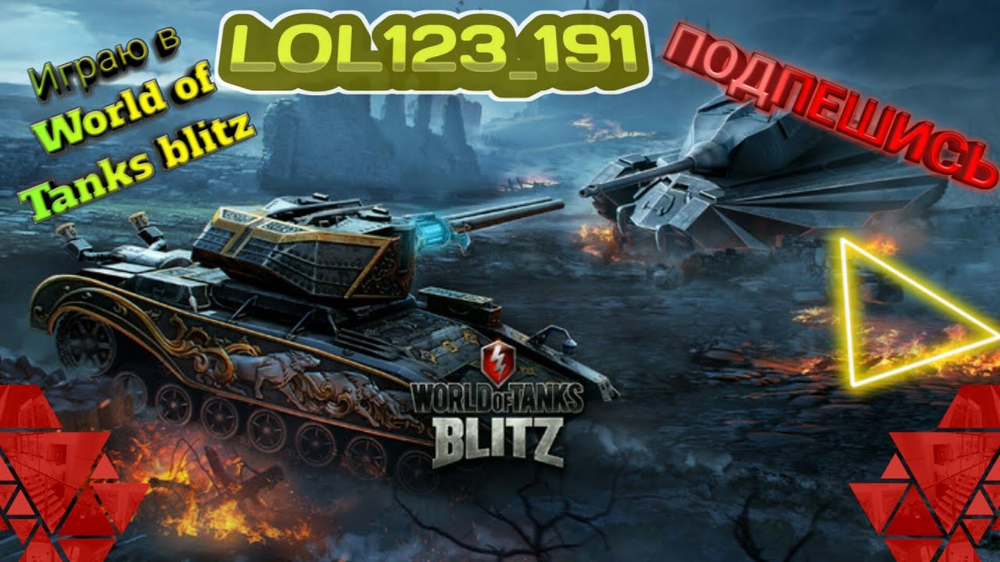

Варгейминг
World of Tanks Blitz — условно-бесплатная массовая многопользовательская онлайн-игра, разработанная и выпущенная компанией Wargaming.net для устройств под управлением iOS, Android, Windows, macOS и Nintendo Switch. Изначально игра была выпущена для ограниченной аудитории в отдельных странах 5 мая 2014 года, и официально выпущена 26 июня 2014 года. World of Tanks Blitz практически полностью повторяет геймплей World of Tanks и включает в себя многие элементы оригинальной игры.
Игра получила положительные отзывы от критиков и игроков. Наиболее высоко были оценены система free-to-play, правильная адаптация «оригинала» под нужды платформы, игровой процесс и графика, однако критике подверглось сенсорное управление.
Игра представляет собой шутер с двумя режимами — обычными и рейтинговыми боями. В обычном бою игроки могут играть во «Встречный бой» и режим «Превосходство». Обычные бои влияют на прогресс профиля, рейтинговые же определяют лигу игрока — всего лиг несколько, от «Бронзовой» до «Бриллиантовой». В игре присутствуют микротранзакции, за которые можно получить бронетехнику или раскраску для неё. Ежемесячно в World of Tanks Blitz добавляются новые сезоны Боевого пропуска с различными темами и новой бронетехникой, камуфляжами, аватарами и внутриигровой валютой.Во «Встречном бою» игровой процесс основывается на битве двух случайно подобранных команд по 7 игроков в каждой, при этом в одной команде могут сочетаться танки разных наций, классов (кроме артиллерии) и годов выпуска. Условие победы в бою — за 7 минут уничтожить команду противника либо захватить нейтральную базу, для чего один или несколько танков должны находиться в отмеченной зоне некоторое время, не получая при этом повреждений. В «Превосходстве» комаа побеждает в случае, если она уничтожит всю технику противника или наберёт 1000 очков победы. Очки победы можно зарабатывать, захватывая точки и уничтожая технику противника. В игре также есть специальные и ограниченные по времени режимы, которые могут длиться от нескольких дней до нескольких недель. К ним относятся «Mad Games», «Реалистичные бои», «Возрождение» и многие другие.